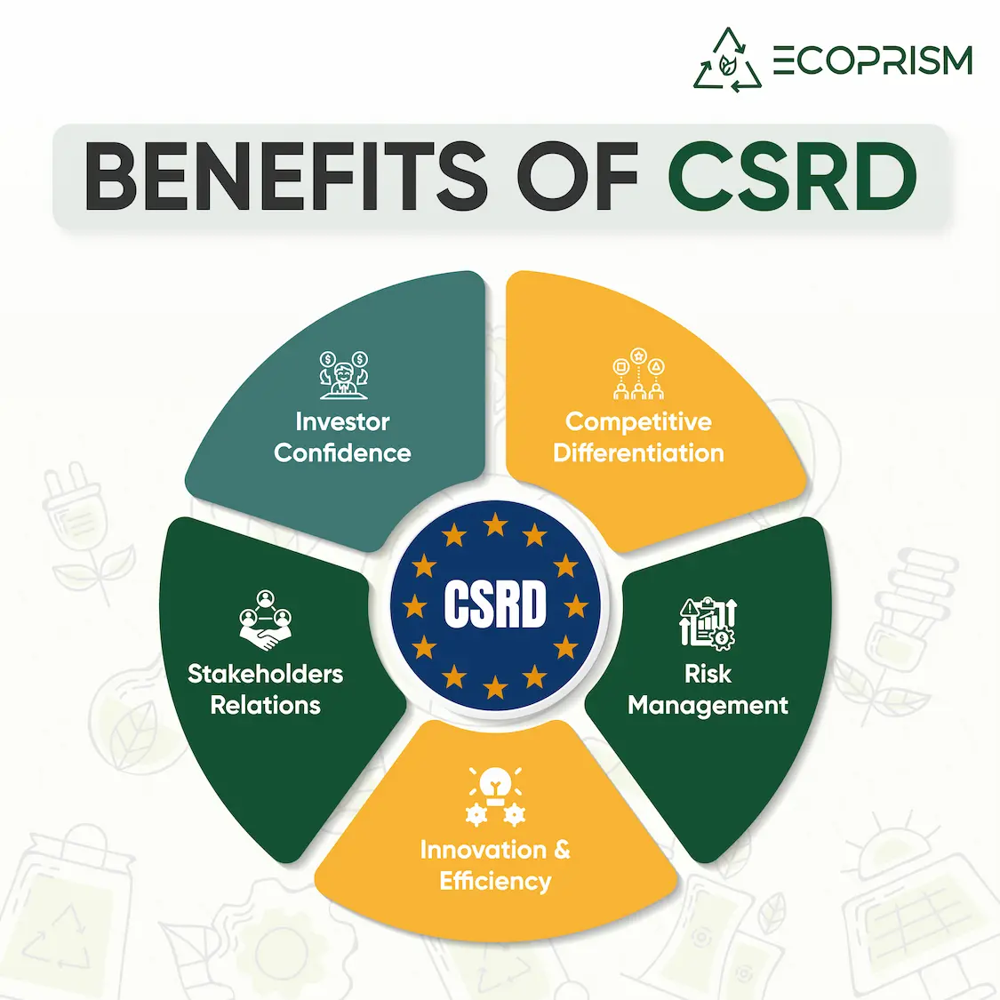

The Corporate Sustainability Reporting Directive (CSRD) transforms how organizations disclose their sustainability efforts. If you are in the process of preparing your first CSRD report, our guide will walk you through essential dos and don'ts and expert insights to help you deliver an impactful, compliant, and well-structured report. Simplify your CSRD report preparation using a structured approach and leveraging tools like ecoPRISM ESG Platform.
Understanding the Importance of CSRD
The Corporate Sustainability Reporting Directive (CSRD) emphasizes transparency and accountability in sustainability reporting. It replaces the Non-Financial Reporting Directive (NFRD) and applies to a broader range of companies, including large public-interest entities and smaller organizations meeting specific thresholds.
Key aspects include:
- Double Materiality: Considering both financial and societal impacts.
- Detailed Sustainability Metrics: Reporting on environmental, social, and governance (ESG) factors.
- Audit and Assurance Requirements: Ensuring data accuracy and reliability.
Preparing a CSRD report is not just about compliance - it's an opportunity to demonstrate your organization's commitment to sustainable growth and build stakeholder trust.

The Do's of Preparing a CSRD Report
Understand the Framework
First, familiarize yourself with the CSRD guidelines and European Sustainability Reporting Standards (ESRS). Understanding the CSRD framework is critical to identifying mandatory disclosures and aligning with regulatory expectations. Knowing the reporting requirements will help you:
- Identify the data you need to collect.
- Understand mandatory disclosures.
- Align your efforts with regulatory expectations.
Tip: official resources and consult experts to clarify the CSRD framework.
Also Read: Understanding ESRS E1: Tackling the CSRD's Rigorous Climate Disclosure Demands
Involve All Stakeholders
- Finance: For financial and operational data.
- HR: For workforce-related disclosures.
- Operations and Supply Chain: For environmental and social metrics.
Focus on Materiality
Adopt the double materiality approach by identifying the following:
- Financial materiality: Issues impacting your company's financial health.
- Impact materiality: Issues affecting stakeholders, society, or the environment.
Prioritize what matters most to your business and its stakeholders to create a focused and relevant report. Our platform simplifies ESG reporting by focusing on materiality and aligning with the European Sustainability Reporting Standards (ESRS) .
Leverage Technology
Manual processes can lead to inefficiencies and errors. A tool like ecoPRISM can simplify:
- Data collection and validation.
- Reporting and compliance tracking.
- Integration with existing systems.
Technology ensures accuracy, saves time, and enhances the quality of your report.
Audit and Assure Your Data
Before submitting your report, conduct a thorough review. Partner with auditors to verify:
- Data accuracy.
- Compliance with ESRS.
- Alignment with your company's sustainability goals.
Implement these CSRD compliance tips to ensure your report meets regulatory standards while effectively communicating your initiatives.
The Don'ts of Preparing a CSRD Report
Don't Delay the Process
The CSRD reporting process is time intensive. Starting late can lead to:
- Incomplete data collection.
- Poor stakeholder engagement.
- Non-compliance risks.
Tip: Create a detailed project timeline and stick to it.
Don't Overload the Report with Irrelevant Information
Including too much data can dilute your report's impact. Avoid:
- Provide clear, thorough explanations for all the material topics.
- Ensure that every issue addressed is relevant to your audience and the report's objectives.
- When technical terms are necessary, include concise explanations to ensure all readers can follow along.
Focus on clarity and relevance to make your report accessible and engaging.
Also Read: A Deep Dive into Microsoft Sustainability Manager's Key Features
Don't Ignore Stakeholder Expectations
CSRD reports are meant for diverse audiences, including investors, regulators, and the public. Ignoring stakeholder concerns can:
- Damage credibility.
- Undermine your sustainability message.
Tip: Use surveys and interviews to gather stakeholder input.
Don't Neglect the Audit Process
Failing to audit your data can result in penalties for inconsistencies, errors, and non-compliance. An unaudited report may need more credibility and transparency.
Also Read: Understanding ESG Assurance: Ensuring Data Confidence for Compliance & Sustainability Reporting
Tips for Creating a Standout CSRD Report
Define Your Reporting Scope
Be clear about the boundaries of your report:
- Which entities and operations are included?
- What timeframe does the report cover?
Setting a clear scope ensures that your report is concise and relevant.
Communicate Effectively
Use visuals such as graphs, charts, and infographics to make complex data easier to understand. A well-designed report:
- Enhances readability.
- Engages a broader audience.
Set Ambitious but Achievable Goals
A CSRD report is more than a compliance document-it reflects your sustainability strategy. Share your short- and long-term goals to demonstrate your commitment to progress.
Also Read: CSRD Value Chain Requirements in Sustainability Reporting
Benchmark Against Peers
Study reports from other companies in your sector to understand industry trends and best practices. Benchmarking helps you:
- Identify gaps in your reporting.
- Identify effective strategies and innovative approaches that align with ESRS requirements.
- Highlight opportunities to improve the comprehensiveness and quality of your ESRS disclosures.
Prepare for Future Updates
The CSRD framework and ESRS will evolve. Stay informed about regulatory changes and be ready to adapt your processes.
Why CSRD Reporting Matters
Beyond regulatory compliance, a CSRD report allows you to:
- Showcase your sustainability initiatives.
- Strengthen relationships with stakeholders.
- Drive innovation and long-term value creation.
By following these dos and don'ts and leveraging expert tips, you can create a report that meets compliance requirements and resonates with your stakeholders. Preparing a CSRD report is an opportunity to highlight your commitment to sustainable growth and stakeholder trust.
Take the first step today - prepare your organization for a sustainable future with ecoPRISM